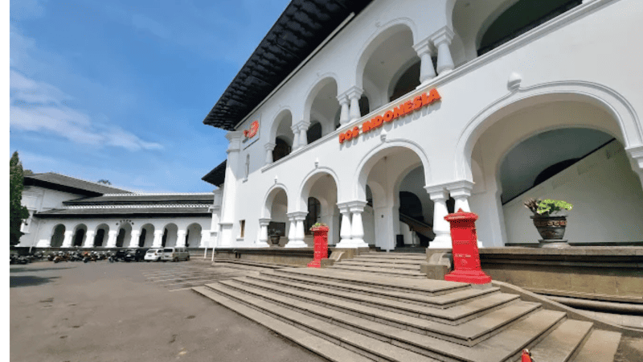

Selamat datang! Saya Pak Pos, siap memandu. 📬
Menelusuri Jejak Komunikasi Nusantara
Klik untuk melihat aturan lengkap →

Jelajahi ruangan museum secara virtual
Website ini merupakan pengayaan digital dari Museum Pos Indonesia. Untuk informasi lebih lengkap, kunjungi:
posindonesia.co.id/museum-pos-indonesia